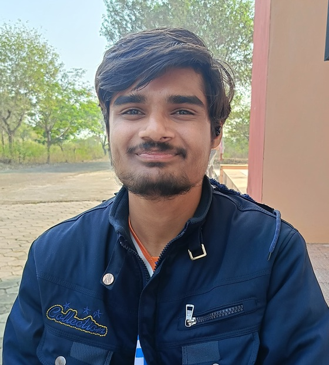

I'm an embedded system enthusiast.
I'm doing Btech from Government Engineering College, Jhalawar. I love making things move from my code. The idea of coding under
real-world constraints and getting output in the physical world
always fascinates me. Till now I've learned everything through
self-learning and I want to use my curiousity and execute my knowledge in real-world
projects and learn under guidance of experienced engineers.


What I build with
I develop STM32 applications using C/C++ and STM32CubeIDE, with Git for version control.
My foundation includes microcontrollers, digital electronics, operating systems, computer architecture, and DSA.
I have developed programs with Timers, Input Capture, PWM, ADC, DAC, UART, SPI, I2C, Interrupts and DMA.
I am also exploring bare-metal programming, ARM assembly, linker scripts, startup code, and RTOS development.

More about me
I enjoy understanding how things work beneath the surface and turning that understanding into something I can build.
My interest in computer engineering started with programming and gradually led me toward embedded systems, where software meets hardware.
I prefer learning by going beyond abstractions reading datasheets and reference manuals, experimenting with hardware, debugging at the register level, and building things from scratch.
This has shaped the way I approach technical problems: understand the fundamentals first, then build and experiment.
Outside of coursework, I spend much of my time strengthening my foundations in computer systems and exploring areas such as firmware, computer architecture, operating systems, and low-level programming.
My long-term goal is to become a strong embedded software/firmware engineer who understands not just how to use a system, but what is happening underneath it.
Projects
STM32 Drivers
Developed reusable peripheral drivers for the STM32 Nucleo-F446RE entirely in C without using the STM32 HAL. Implemented register-level drivers for GPIO, RCC, NVIC, UART, SPI, I2C, DMA, ADC, timers, PWM, and input capture.
Worked directly with STM32 reference manuals and datasheets to configure peripherals and understand the underlying hardware.
Tech used:
C,
STM32,
Bare Metal Programming,
DMA,
Timers,
Communication Protocols
STM32 Data Acquisition System
Developed a high-throughput data acquisition system for the STM32 Nucleo-F446RE using bare-metal C and a custom peripheral library. Configured timer-triggered ADC sampling with DMA and implemented a ping-pong buffer scheme for continuous data acquisition without blocking the CPU.
Implemented DMA-based UART transmission to efficiently transfer acquired data while the CPU processes the alternate buffer, with custom drivers and reusable functions developed specifically for the system.
Tech used:
C,
STM32,
Bare Metal Programming,
ADC,
DMA,
Timers,
UART
Automated Solar Panel Cleaner
Designed and developed an automated solar panel cleaning system using a motor-driven mechanism to move a cleaning assembly across the panel surface. Implemented embedded control logic for automated movement and coordinated motor operation with the cleaning mechanism.
Developed the system with a focus on reliable mechanical movement, repeatable cleaning cycles, and embedded control, integrating the motor, belt-driven mechanism, and control electronics into a single automated system.
Tech used:
C,
STM32,
Embedded Systems,
Stepper Motor,
Motor Control,
Linear Motion Drive